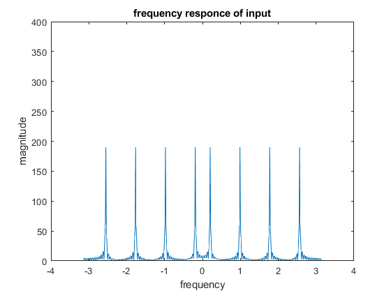
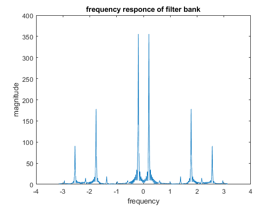

Digital Signal Processing MATLAB HW2 - q5
Professor: Dr. Sheikhzadeh Author: Maryam Barazande - 9723016 E-mail: maryambarazande7@gmail.com University: Amirkabir University of Technology
Contents
Clear recent data
clear; close all; clc;
Multi-Channel Filters and Perfect Reconstruction
a
define parameters
f1 = pi/16; f2 = 5*pi/16; f3 = 9*pi/16; f4 = 13*pi/16; t = 0: 1/2/pi: 60; x1 = cos(2*pi*f1*t); x2 = cos(2*pi*f2*t); x3 = cos(2*pi*f3*t); x4 = cos(2*pi*f4*t); x = x1 + x2 + x3 + x4; n = 512; fs = 2*pi; freq = linspace(-fs/2, fs/2, n); x_f = fftshift(fft(x,n)); figure(1); plot(freq,abs(x_f)); title("frequency responce of input"); xlabel('frequency'); ylabel("magnitude"); ylim([0,400]);
b
filename = 'filters.xls'; delimiterIn = ' '; headerlinesIn = 1; B = importdata(filename,delimiterIn); b_analysis = B.Sheet1; b_synthesis = B.Sheet2;
c
double the first Frequency component eliminate the second Frequency component the third Frequency component Remains unchanged attenuate the fourth Frequency component by 0.5 factor
change = [2, 0, 1, 0.5]; for k = [1:4] step1 = filter(b_analysis(k, :), 1, x); step2 = downsample(step1, 4); step3 = change(k)* step2; step4 = upsample(step3, 4); step5(k,:) = filter(b_synthesis(k,:), 1, step4); end y = sum(step5(:,:)); % Plot Output y_f = fftshift(fft(y,n)); figure(2); plot(freq, abs(y_f)); title("frequency responce of filter bank"); xlabel('frequency'); ylabel("magnitude");